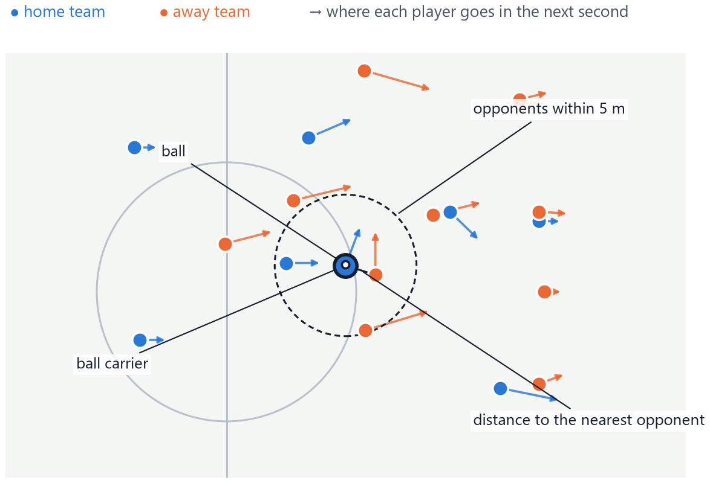
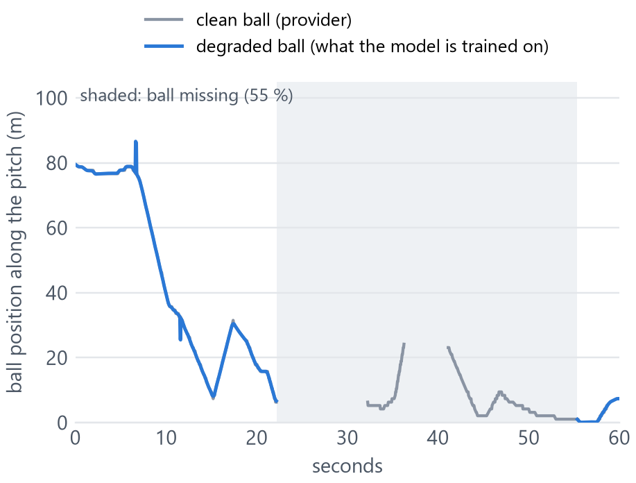
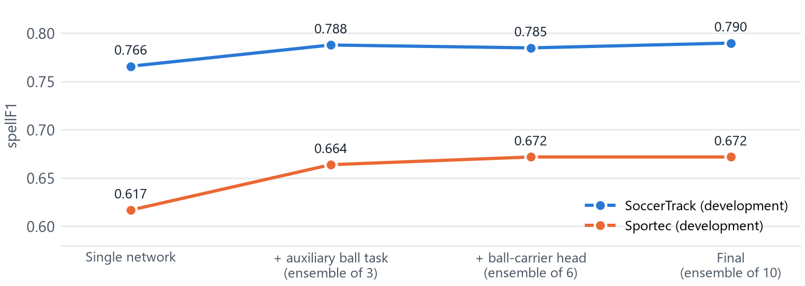
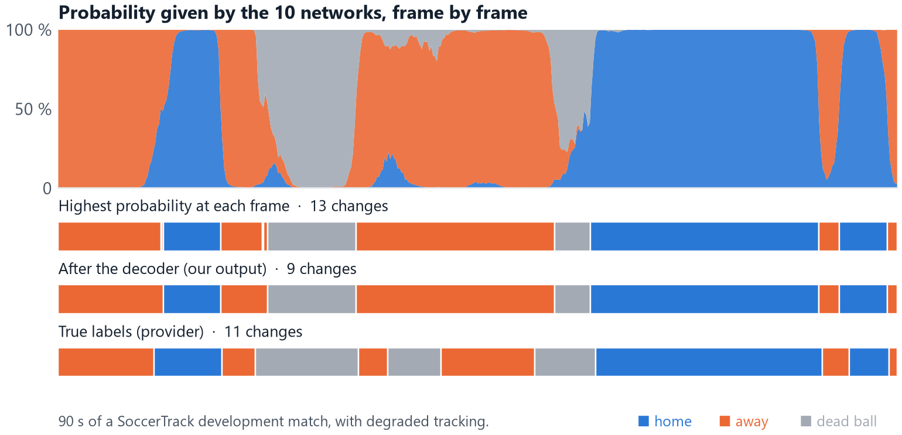
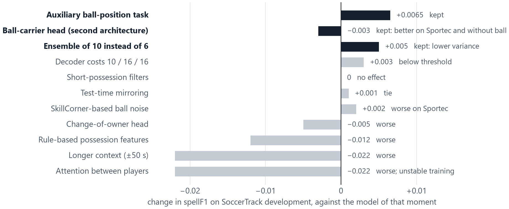
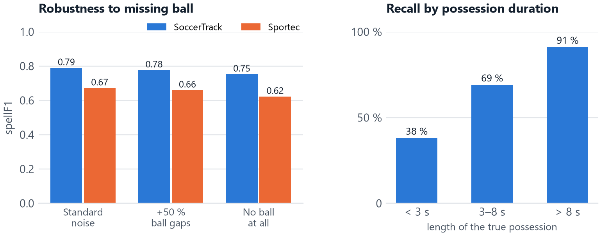

Who has the ball, frame by frame, when the tracking loses it almost half of the time. Trained only on public matches, run blind on the target.
Label every frame of FC Barcelona – Athletic Club as home possession, away possession or dead ball, from automatic tracking where the ball is missing about 40% of the time. No frame of the match could be labelled.
The team with the ball stretches and advances; the other compacts and presses. A network reads both teams as sets of players over ±25 seconds and uses the ball when it is there.
Trained on 15 public matches with their tracking deliberately degraded, it was judged only on held-out matches. Below, one of them: a public match with video and ground truth.
The same public match, never used to train or choose anything. Its tracking was degraded the way an automatic tracker loses data: the ball is visible on 46% of frames. Drag through three minutes of play, switch between what the model sees and the real positions, and compare its call with the truth. Above, the whole match.
White shirts are the home team, blue the away team. When the ball is not tracked, the model reads possession from how both teams move.

Thirteen features per player and eleven per match, five times a second: distances to the ball and to opponents, who is closest, where each player is going in the next second, how each team spreads.

02 / 06Public tracking is clean; the target's is not. Fifteen public matches were degraded with ball gaps, jumps and lost players, with ranges taken from the literature and from SkillCorner open data, never from the target.

03 / 06A shared per-player encoder pooled per team, so broken tracks and identity switches do not matter, then a bidirectional temporal network. An auxiliary task, where the ball is now and in one second, teaches it to follow the ball when it is not seen.

04 / 06Ten networks are combined by geometric mean, and a 3-state Viterbi decoder turns their frame-by-frame probabilities into possessions: a change survives only if the evidence lasts long enough.

05 / 06Each change was pre-registered and kept only if it improved the held-out development matches. Attention between players, longer context and rule-based features made it worse and were left out.

06 / 06With 50% more ball gaps, or with no ball at all, the score barely moves: the model has learnt possession from collective movement. Long possessions are found 91% of the time.